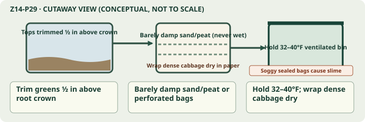

Z14-P29 · Food production and preservation · New manuscript
Store carrots, beets, parsnips, and cabbage in cold-moist media cleanly
Keep crisp root crops and dense storage cabbage fresh all winter at 32–40°F and high humidity without slimy rot.
When it applies · Root cellars, cool basement cold rooms, and dedicated spare produce refrigerators.
Equipment · Clean food-grade totes/boxes, slightly damp clean sand/peat/sawdust OR perforated produce bags, and thermometer.

Actions
- Twist or trim leafy green tops cleanly roughly ½ inch above the crown of carrots, beets, turnips, and parsnips immediately after harvest—leaving tops attached pulls moisture straight out of roots and shrivels them within days.[P04, P05]
- Pack dry-brushed sound roots in slightly damp (wrung-out, NEVER dripping wet) clean coarse sand, peat moss, or untreated hardwood sawdust—or in loosely perforated food-grade bags—inside a 32–40°F space so roots stay crisp without waterlogging.[P05]
- Wrap firm, dry, sound winter-storage cabbage heads individually in newspaper or perforated bags on slatted shelves (keeping cabbage away from house heating return ducts because cabbage odor migrates readily upstairs).[P05]
Failure recognition · Sealing wet washed carrots inside airtight unperforated plastic bags at 55°F where anaerobic bacterial slime liquefies the crop in a week.[P05]
Verify · Confirm tops trimmed ½ inch above crown, storage temp 32–40°F, packing medium barely damp (never soggy), and zero airflow blockage.[P04, P05]
Stop or change course · Slimy film, sour smell, or spreading soft spots require dumping damp medium, culling damaged roots, and sanitizing bins.[P05]
Evidence and editorial notes
- P04 · University of Minnesota Extension · Harvesting and Storing Home Garden Vegetables (current web edition)
- Section: Harvesting Maturity, Curing, and Post-Harvest Handling · Conditions: Home garden root crops, winter squash, onions, potatoes, and greens
Support: Harvest crops at proper maturity during cool morning hours without bruising, cure storage crops (onions, garlic, winter squash, potatoes) at crop-specific warm/dry conditions before cold storage, and cull any nicked or diseased items for immediate use.
Limitations: A single bruised or rotting vegetable spreads decay rapidly across an entire storage bin. · Conflicting evidence: None; explains why curing precedes long cold storage.
Editorial note: Anchors harvest-to-storage quality gates in Z14. · Specialist reviewer: Post-harvest horticulture specialist
Primary source · checked 2026-11-24 - P05 · University of Minnesota Extension · Harvesting and Storing Home Garden Vegetables (current web edition)
- Section: Root-Cellar and Cold-Storage Temperature/Humidity Zones · Conditions: Basements, root cellars, unheated porches, and insulated cold bins
Support: Match stored produce to distinct storage regimes: cold-moist (32–40°F, high humidity for carrots/beets/cabbage), cool-moist (45–50°F for potatoes), cold-dry (32–35°F dry for onions/garlic), and cool-dry (50–55°F dry for winter squash); separate ethylene-producing apples from sensitive vegetables.
Limitations: Storing potatoes below 40°F converts starch to sugar; freezing temperatures ruin unhardened stored roots. · Conflicting evidence: None; prevents treating one basement temperature as universal for all crops.
Editorial note: Core root-cellar zoning and monitoring evidence in Z14. · Specialist reviewer: Post-harvest horticulture and food storage
Primary source · checked 2026-11-24
Source lineage · UMN Extension Harvesting and Storing Vegetables; new manuscript · Classification · New manuscript.